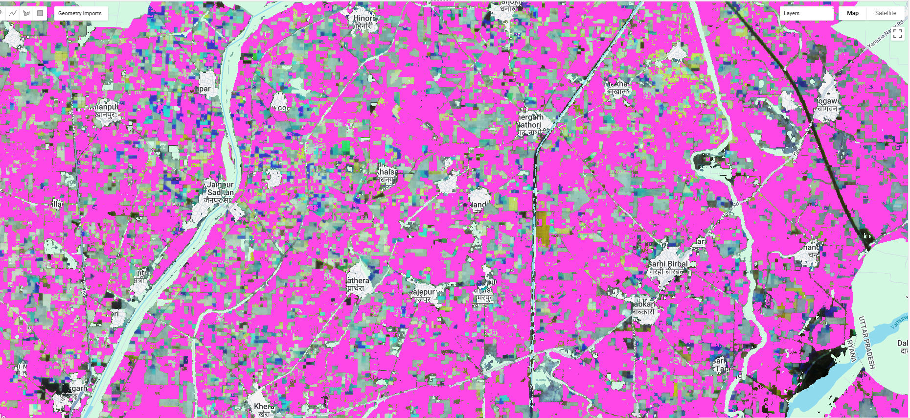
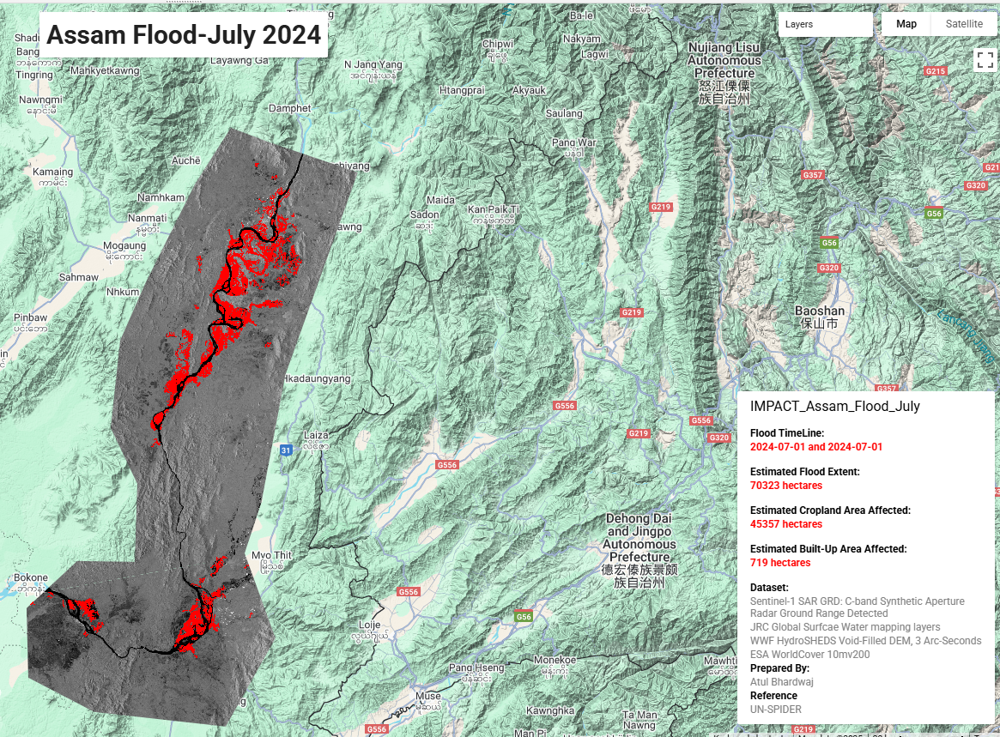
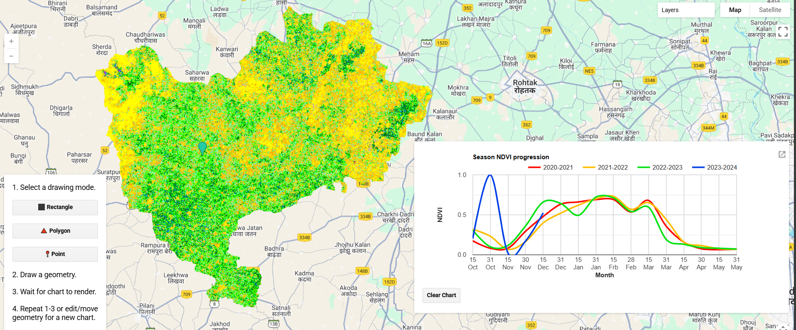
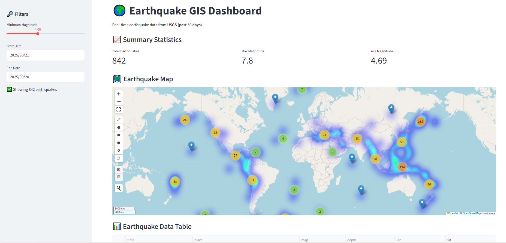
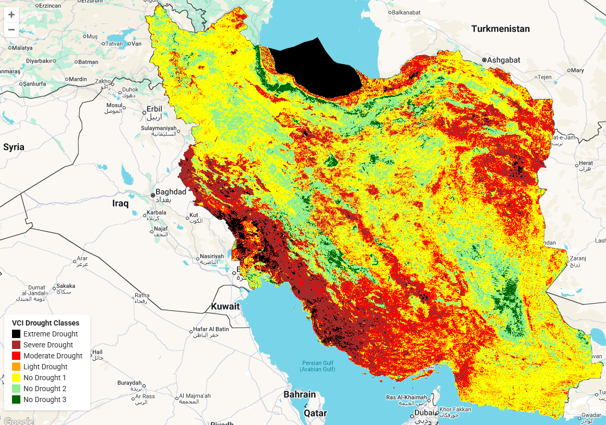
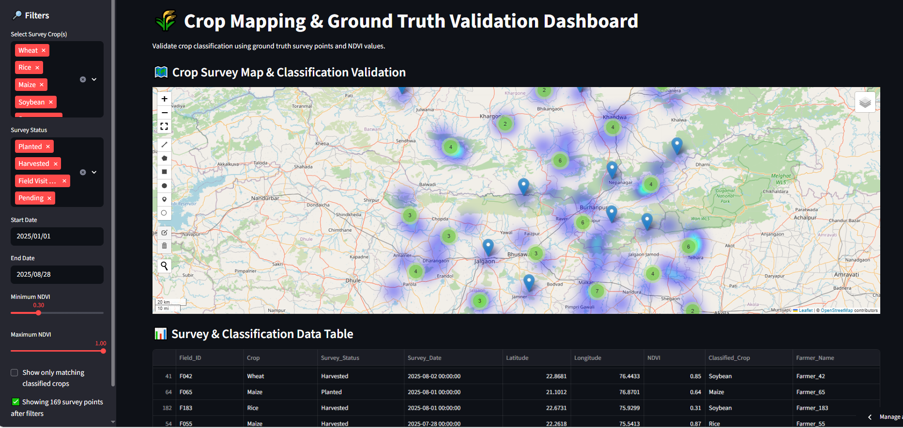
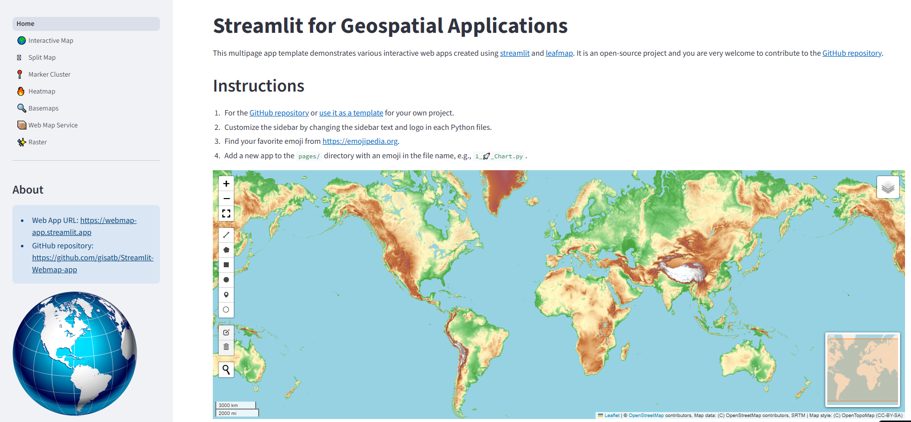
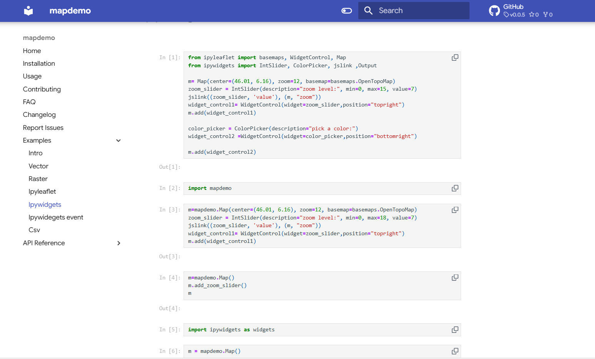
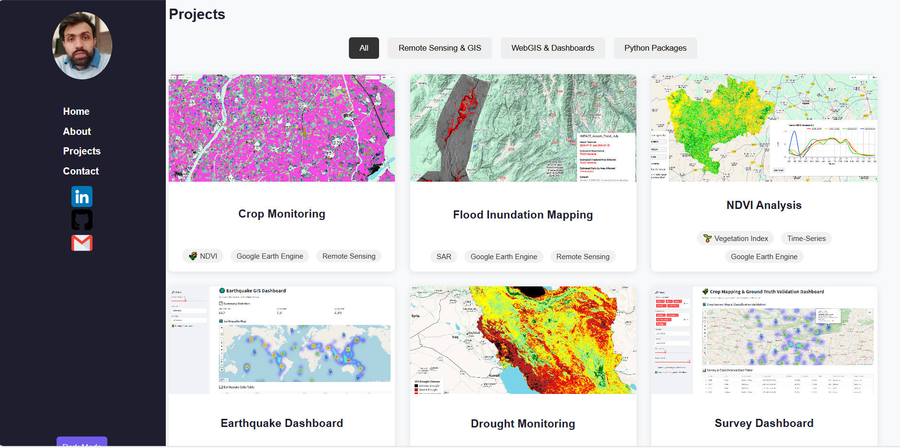

Hi, I’m Atul Bhardwaj
🛰️ Remote Sensing & GIS Specialist | 🌍 Geospatial Analyst | 📊 Data Science & AI Enthusiast
About Me
- 🎓 PG-Diploma in Remote Sensing & GIS (IIRS-ISRO) | M.Sc. Environmental Science
- 💼 5+ years of experience in Geospatial Analytics, Remote Sensing, and Data Science
- 🌱 Passionate about applying AI/ML in agriculture, climate, environment, and urban planning
- 💡 Skilled in building WebGIS, spatial models, and EO applications
Tech Stack
- 🛰️ Remote Sensing & GIS: ArcGIS, QGIS, ENVI, SNAP, ERDAS, Google Earth Engine
- 💻 Programming: Python (NumPy, Pandas, Scikit-learn), R, SQL, PostgreSQL, JavaScript
- 🤖 AI/ML: TensorFlow, PyTorch, Deep Learning, Random Forest, CNNs, Time-Series Models
- 📊 Data Science: Regression, Classification, Clustering, Time-Series, NLP, Data Visualization
- 📈 Visualization Tools: Power BI, Matplotlib, Seaborn, Leaflet, Mapbox
- 🌐 Web Development (GIS): GeoServer, PostGIS, Mapbox, MapStore, Leaflet, HTML, CSS, JS
Projects

Crop Monitoring

Flood Inundation Mapping

NDVI Analysis

Earthquake Dashboard

Drought Monitoring

Survey Dashboard

Environmental Dashboard

Mapdemo Python Pacakge

Portfolio Website
Contact
Email: atbhardwaj19.1993@gmail.com
LinkedIn: Profile
GitHub: Profile